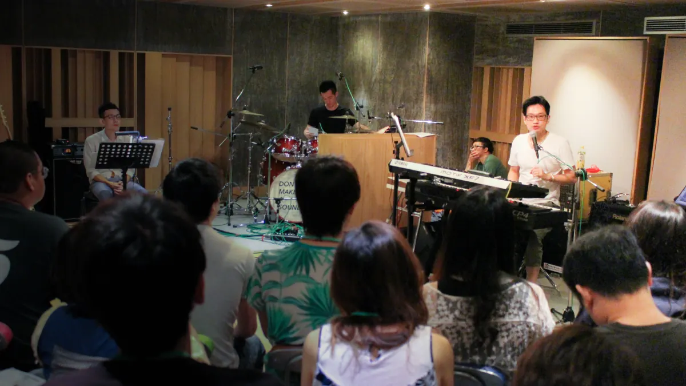

上篇專訪中我們聽到了呂聖斐老師在音樂這條路上的心路歷程，也感受到他非常重視音樂的傳承及因材施教的教育。在續集的訪談中，呂聖斐老師和我們分享該如何與非專業音樂人士進行有效的溝通。到底職人與藝術家之間的平衡點，可以如何拿捏？如果你立志成為一名專業音樂人，他的話可能讓你受用一生！
當導演跟你說要「藍色」的感覺：成為職業音樂人的關鍵秘訣
（一）培養耳朵、增加屬於自己的音樂語彙
呂聖斐老師強調，「抓歌是非常重要的練習，也就是養耳朵。抓歌或買套譜練習，再背起來，消化成自己的東西。一開始耳力不好的時候你可能抓不出來，透過練習、背誦他人 transcribe 好的音樂來豐富自己的耳力與審美。曾經做過這些努力跟研究，那些東西才會真的變成自己的。抓多、背多了、聽多了才會對這些風格或作法培養出一個自己的 taste，在和弦、合聲、音色的使用、選擇上，都是你個人對聲音的美感選擇以及鑑賞力。
我會鼓勵音樂人一定要用自己的形容詞去形容自己的技巧和做法。例如導演如果跟你說要浪漫的感覺，你腦子裡就必須有一些對浪漫的音色、和弦、樂器、效果器的資料庫想法。你可能會有一個 folder 是只有自己看得懂。那是你自己品味的形容詞。我會鼓勵大家去培養自己不同手法的不同作法。要浪漫我給你十種浪漫，你挑一個。如果你只有三種萬一都不是他要的，就無法完成工作。」
（二）當一名具有自己特色的職人
「你就算有這些自己的語彙，還是不見得能跟別人溝通。」身為職人，除了能在專業上複製自己的手法，還要充分理解業主的需求。像藝術家的設計師是用自己的想法去執行任務，而不是從業主的角度去量身訂做。我們不能把委託人的需求忽略掉，僅以藝術家的角度自私地去完成這件作品。這個分寸的拿捏從來都不容易。
好的匠人是完全理解了委託人、業主的需求，而幫助他量身訂做出他要的產品。而作品成功之餘還要讓別人聽得出是你做的，那又是更高明的階段。當我們完成了一件商業作品，人家還聽得出是你所完成的，那你就是一個成功的匠人、職人。」
呂聖斐老師鼓勵所有要把音樂當職業的人，讓自己的彈性跟各種風格、美感，甚至是音樂之外的領域的感知擴大。在溝通的時候，你可以知道自己可以提供什麼服務給人家。「當我遇到一個 rock 的樂手，我會建議他最好 fusion, latin, funk 也都學一點。那你就會是一個很好用的職人跟工匠，好的匠人不見得是一個好的藝術家，但好的藝術家通常不會是一個好的匠人。差別就在於他是從甚麼角度完成作品? 在工匠的商業工作中，是有可能成就一件藝術品的。而量身訂做的商業工作中又能兼具自己的特色，通常那是你拿下工作的原因。」
品味是可以被培養出來的。把感受轉化成自己的語彙，下次就可以把它複製出來，也會促進你溝通的技巧與素材。音樂技術與品味的培養，是不能間斷的事。儘管已是多次獎項的得主，呂聖斐老師還是說「我到現在都還在練習跟培養各種其他領域的美感，另如看畫作，品嚐好酒．．．」
（三）思考和溝通：你要講得出為什麼要這樣做
呂聖斐老師提到，美國採取的是引導式教學，有很大的空間可以發揮。所以現在做講座引導年輕人的時候，他也喜歡用這種方式引導樂手們思考。「我會一直強調『想法』這件事。今天不管是你的混音、彈奏、穿著風格，其實都有個人意念在。但是很多人都沒有去思考這個部分，當你在彈奏跟選音色的時候，你一定是有自己的想法的。或是在用這個和弦、選擇這個合聲，要更清楚盡量知道你選擇的想法、原因。」
很難想像一直強調「溝通這件事很重要」的呂聖斐老師，在剛開始的時候也不太喜歡導演或製作人用＂外行＂的角度來跟他溝通。「例如，有一回一個導演說想要有“藍色”的感覺。我相信大部分的音樂人聽到都會想翻白眼，但經過我多年來的訓練，我現在的做法是想辦法跟他溝通，揣測他的想法。你可以舉很多例子給他。是晴朗天空，明亮開心的藍色？還是寬廣大海，悠閒舒適的藍色？還是藍調音樂的藍？你一定要往下抽絲剝繭地去理解業主的想法。不然你是沒有辦法完成作品的，你只是在瞎猜，或是一肚子氣，覺得業主怎麼那麼外行。每個人都會有當業主的一天，你應該也會希望你雇用的人能理解你的想法完成，這才是我們所謂的＂專業＂。音樂這件事上沒有對錯，只有你有沒有理解業主的想法，有沒有找到適合的方式去溝通，而完成任務。」
因此，如果跟導演合作，身為一名專業配樂家，應該能＂說服＂你這樣做的理由。而要做到這樣的程度，不但要上面所敘的「思考」（對自己音樂上各種手法的意念）、「溝通」（了解導演或雇主的需求）、「音樂詞彙」（屬於自己特有的資料庫），全部結合了才能有效率地完成任務，且達到對方提出的需求。
能夠說出這番話的呂聖斐老師，想必在年輕的時候也是經過了多次的來回溝通經驗，而漸漸掌握了音樂、溝通、及思考的多方面技能，造就了今天在音樂配樂及演唱會總監的一席之地。
職人與藝術家是光譜的兩端，找到一個屬於自己的顏色
上述的秘訣較是針對職業音樂人。但如果是在作自己的音樂時，又該如何定義自己的位置呢？取得藝術家跟職人之間的平衡，從來不是件容易的事。「這是光譜的兩端，大家通常會是在光譜的中間遊走，找到一個顏色，自我感覺也不會太良好或過差。很少人會是極端的。」
「當然你絕對可以用純藝術家的角度閉門造車，創造出一個作品後，再找個人賣掉它。就像當初無限融合想吸引的是一個特定市場。會為了這個假想的受眾、族群去設計專輯走向、風格，希望他們聽了之後，提升了他們自己的品味，或許得到超出我們預想的結果，這並不是被動的配合他們的需求的商業作法。」
這也是呂聖斐老師和他的樂團「無限融合」一直都持續在台灣創作現代爵士樂的其中一個原因。儘管爵士樂在台灣不算普遍，但還是有它的聽眾，對於台灣音樂的豐富性而言也是一個必要的存在。而身為職人也身為藝術家的無限融合樂團，在專輯的主題設計或甚至混音的呈現等，都有它的邏輯。為的就是取得藝術家跟職人中間的平衡點，讓這個消費族群也能享受在這張專輯的音樂商業性以及藝術性當中。
「做自己的創作音樂，是我記寫人生的方式。人生沒有很長，我的目的不是錢，是希望這個東西被留下來，或是我對我的東西有自信它是好的，想要讓更多人看到、聽到。」
聽到這裡，大概就可以感覺到為什麼他會想要持續做「無限融合」，持續在台灣推廣融合爵士音樂。不管是不是能夠在市場上得到立即的回報，但是就是要有人做。「我們不是從賺錢或是賺名的角度，不紅沒關係，可是我留了東西下來，至少台灣有一個樂團在做這件事情，或是台灣在這個音樂風格上面沒有缺席。」
當然，如果是獨立音樂人，呂聖斐老師還是建議保持有藝術家的精神，不需要硬將與本身個性與風格原創性很高的音樂人或樂團硬包裝成其他樣貌。「欣然鼓勵樂團或藝人做出不同的嘗試。這會讓我看到台灣的豐富性，這才是我們能獨特於世界上的軟實力。」
「在台灣做音樂，我會希望是用文化的方式。做音樂的時候我可能會去思考，如何讓我們這塊地方產出來的文化藝術是其他地方也會喜歡，同時又能凸顯台灣特色。我們可以做一些比較精緻的東西，或是開發一些新的技術。」呂聖斐老師鼓勵年輕的音樂人，有機會去中國或其他地方見識見識，短期也好，累積一些和不同地方的人相處的經驗再回來台灣，不論對個人或音樂甚至是其他行業都會很有幫助。
即使將來不走樂手的路，這都會是一段珍貴的經歷
很多人喜歡音樂，喜歡彈奏樂器，但是不見得每個人最後都會走上職業音樂人的道路。在這幾天的演唱會樂手研習營中，呂老師對學生們說「你今天想要做樂手，但很有可能將來你會慢慢發現其實你並沒有那麼適合做樂手，不管是天份還是機運。也可能後來，你轉去做了製作人、演唱會導演，甚至是硬體相關的開發人員，這個音樂產業本來就是一個從上到下都需要不同能力、角色的人去完成的。如果你有這段職業樂手的經歷，你就有可能比別人獨特，更能做出有特色的作品，或是創新的方式完成你的工作。」

關於樂手的快問快答：
Ｑ：現在最常使用的鍵盤型號是什麼？選擇鍵盤的因素為何？
呂：YAMAHA CP1、CP4、Motif XF、Montage。介面、音色、觸鍵、方便性，是選擇的因素。
Ｑ：如何在萬人演出時還能當作是在自己家，克服緊張壓力？
呂：我的克服方式，喝酒（笑）。在正式演出的場合，還是會有壓力。我是個內向的人。不像我們樂團的sax手董舜文就是個百分百的獅子座，天生的表演者。每次看他在台上那麼自在還是會羨慕啊．．．
Ｑ：平常表演或錄音時會聽節拍器嗎？
呂：必須的。每個人對click的詮釋不太一樣。有的人忽快忽慢，有的人早，有的晚，這和個性也有關。我小時候錄音或是做MIDI常發現自己會搶拍，因為個性急，又怕挨罵或落後…。喝了點酒放鬆後就會比較準。但音樂不是準了就好聽。怎麼在準的同時又顧到動態跟律動，這不容易體會跟執行，但是要朝這個方向練習。就像大部分的古典音樂都有速度快慢，忽大忽小，來表現感情。但是現代音樂因為受限於節奏的穩定速度，剩下的方式就是透過音量、樂器的增減、音的長短表現 (Articulation) 去讓音樂有感情起伏，而不是透過速度來做。
小編後記：
從這次的專訪中發現呂聖斐老師是一名很健談的人。他提到，不管去到哪裡，都喜歡和當地的庶民聊天，像是計程車司機或是餐廳老闆。儘管已是流行音樂界的大人物，他依然誠懇地與任何人對談。我想這就如同他對任何曲風的歌曲，都是抱持著用心享受在這首歌的意境一樣，讓每一首他彈奏出來的歌都賦有生命力。而要成為一名如他所說的因材施教的音樂教育者，想必需要特別強的觀察力與同理心。呂聖斐老師在擔任這麼多重大角色的同時還能夠耐心地堅持自己的理念，推廣爵士樂，也推動音樂的傳承。